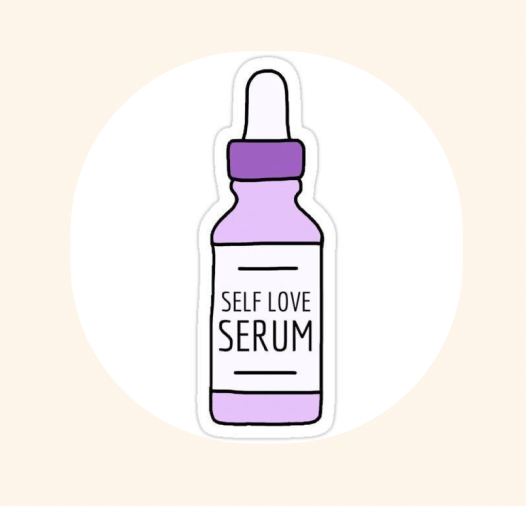

Når du er mellem 10–16 år, skal du helst bruge en serum med retinol hver dag?

FALSK!
Din hud behøver slet ikke alt den hudpleje. Den er allerede mega god og sej til at passe på sig selv. Det er først, når du bliver ældre og voksen, at du kan begynde at bruge serum.